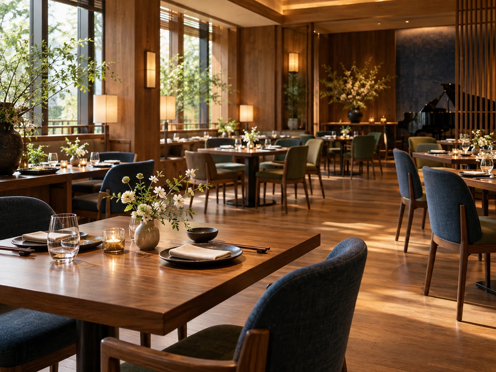

CONCEPT
いろいろな国の料理を、
ひとつの食卓に
カフェ・ブルージュは、秋田市南通築地にあるレストランです。 料理は、和食、欧風、イタリアン、エスニックなど、さまざまな国の料理法を取り入れたインターナショナルな創作料理。 ランチのコース、ディナーのコース、アラカルトがあります。
International Cuisine
和、欧、イタリアン、エスニック。さまざまな国の料理法を、ひとつのお皿に取り入れた創作料理です。
お店の公式サイトには、こう紹介されています。
建物はデンマーク調のウッディな外観で店内には心地よいジャズが流れています カフェ・ブルージュ 公式サイトより
来店された方は、広々とした空間にジャズやボサノバが流れ、テーブルには花が飾られていた、と書かれていました。 料理も、音も、ゆっくり味わうお店です。
